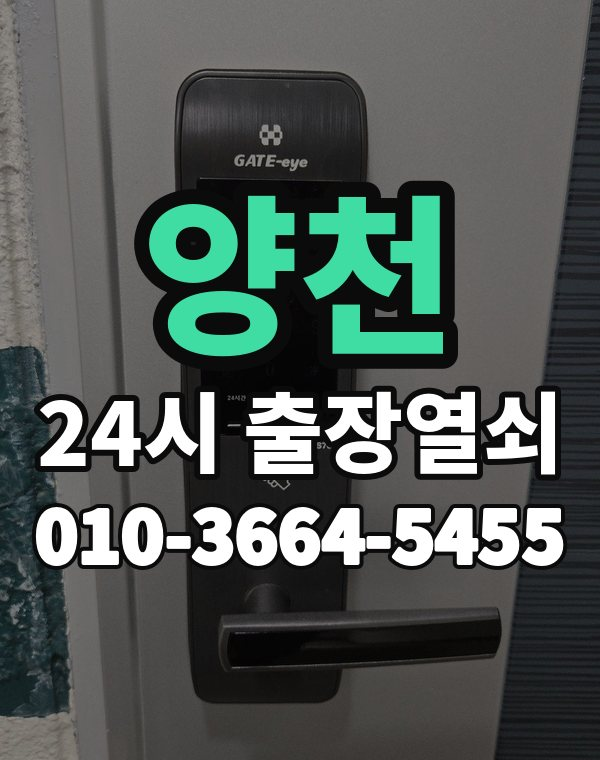

양천 출장열쇠, 이런 동네입니다
양천구는 목동 아파트 단지와 신월동, 신정동 빌라가 나뉘어 있는 동네입니다.
목동 쪽은 오래된 대단지라 도어락 교체 시기가 된 집이 많습니다.

양천구 출장 가는 동네
- 목동
- 신월동
- 신정동
목동 출장열쇠, 신월동 열쇠집처럼 동네 이름으로 찾으셨어도 같은 곳입니다.
적혀 있지 않은 동네도 양천구 안이면 다 갑니다.
양천에서 하는 일
양천 출장 부르실 때
목동 아파트는 단지 번호와 동 번호를 함께 알려주세요.
신월동, 신정동 빌라는 건물 이름이 있으면 같이 말씀해 주시면 됩니다.
오목교역, 목동역, 신정네거리역 근처라고 말씀해 주셔도 위치 잡기가 쉬워집니다.
가까운 역이나 큰 건물, 단지 이름을 같이 알려주세요.
- 정확한 주소, 아파트라면 동과 호수
- 번호판 상태 (꺼짐, 켜짐, 경고음)
- 거주 확인용 신분증이나 주소 나온 우편물
전화부터 작업까지 순서는 이용안내에 적어 두었습니다.
양천 출장열쇠 관련 글
- 서울 양천 목동 도어락 번호판이 꺼졌을 때 순서대로 해볼 일
- 양천구 목동 현관 도어락 손잡이가 헛돌 때 원인과 수리 판단
- 양천구 목동 문 열기 전 신분 확인 절차, 무엇을 준비하면 될까
- 양천구 목동 아파트 입주·퇴거 날 도어락에서 챙겨야 할 것들
- 서울 양천 목동 방문·화장실 문이 안에서 잠겼을 때 여는 방법과 주의점
- 서울 양천 신정동 한파에 도어락 반응이 느려질 때 배터리 관리법
- 양천구 신정동 현관문이 덜 닫힐 때 도어클로저·경첩 살펴보기
- 서울 양천 신정동 열쇠 잃어버리고 문 잠긴 날 대처 순서
- 양천구 신정동 지문·카드 스마트 도어락 고르는 기준 정리
- 양천구 신월동 출장열쇠 부르기 전 사진·위치 준비 체크리스트
- 양천구 신월동 부모님 댁 도어락, 어르신 편한 설정으로 바꾸는 안내
- 서울 양천구 신월동 빌라 현관 방범 점검, 집에서 해볼 다섯 가지
- 양천구 신월동 도어락 모터 소리만 나고 안 열릴 때 점검 포인트
양천 출장열쇠 자주 묻는 질문
양천구 끝쪽 동네도 오시나요?
목동, 신월동, 신정동 등 양천구 전 지역 갑니다. 적혀 있지 않은 동네도 양천구 안이면 출동합니다.
양천 늦은 시간 출장도 되나요?
밤이든 새벽이든 받습니다. 어디인지 들으면 언제쯤 도착하는지 바로 말씀드립니다.
문을 못 열면 비용을 내나요?
열지 못하면 비용은 없습니다. 작업 전에 금액을 듣고 정하시면 됩니다.
집주인이 아니어도 열어 주나요?
사시는 분이 맞는지만 확인되면 됩니다. 신분증이나 우편물을 준비해 주세요.
양천에서 도어락 고장도 봐주시나요?
네, 문 열기와 함께 도어락 수리, 설치, 교체도 합니다. 고쳐서 되면 교체는 권하지 않습니다.